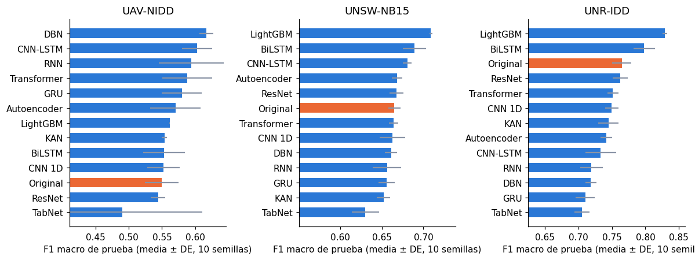
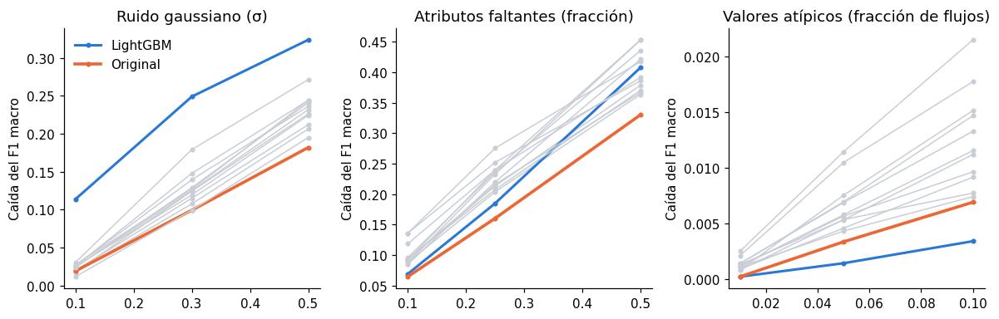
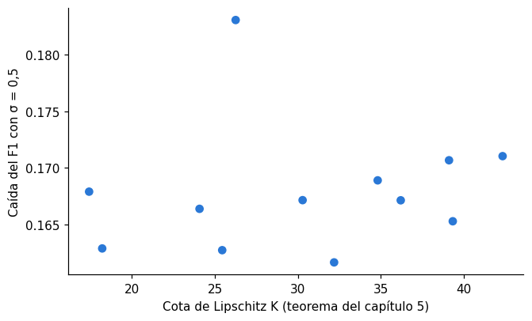
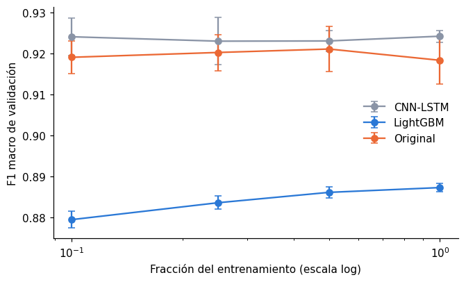
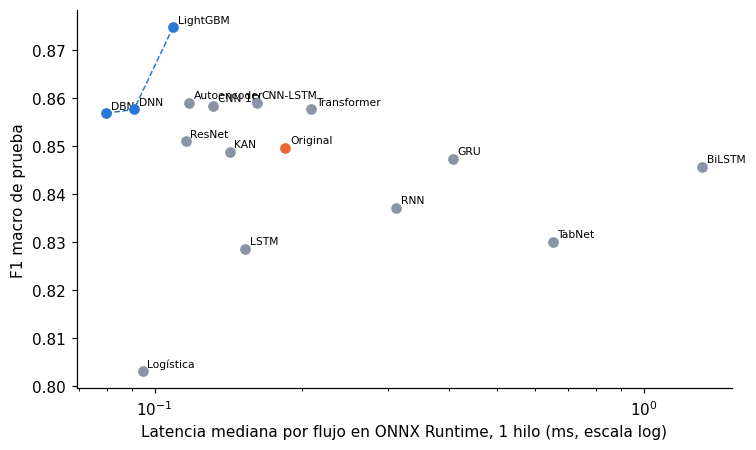

Evaluación ampliada: conjuntos adicionales, robustez y adecuación#
Este capítulo responde a las condiciones 4, 5 y 6 de la definición operativa de superioridad (sección 8.4 del enunciado) y al cuadro 5 de robustez, calibración y eficiencia. Las condiciones 1 a 3 están en el capítulo 7; el balance de las seis condiciones, al final de este capítulo.
Conjuntos adicionales#
Los tres conjuntos se eligieron el 22/11/2026, antes de entrenar cualquier modelo con ellos, y no se usaron para ninguna decisión de diseño (sección 5.3 del protocolo). Los 13 modelos de la familia se entrenaron con sus hiperparámetros y su arquitectura del problema principal, sin búsqueda nueva para ninguno, con 10 semillas (6001 a 6010), el mismo tope de 30 épocas y la misma parada temprana. Son 390 corridas, sin errores.
Desempeño por conjunto#
| UAV-NIDD | UNSW-NB15 | UNR-IDD | ||||
|---|---|---|---|---|---|---|
| F1 ± DE | rango | F1 ± DE | rango | F1 ± DE | rango | |
| modelo | ||||||
| Original | 0.550 ± 0.025 | 11 | 0.665 ± 0.007 | 6 | 0.765 ± 0.014 | 3 |
| CNN-LSTM | 0.603 ± 0.023 | 2 | 0.681 ± 0.005 | 3 | 0.733 ± 0.023 | 9 |
| Autoencoder | 0.570 ± 0.038 | 6 | 0.668 ± 0.006 | 4 | 0.742 ± 0.008 | 8 |
| RNN | 0.594 ± 0.049 | 3 | 0.656 ± 0.017 | 10 | 0.719 ± 0.017 | 10 |
| Transformer | 0.588 ± 0.037 | 4 | 0.664 ± 0.006 | 7 | 0.752 ± 0.008 | 5 |
| BiLSTM | 0.553 ± 0.031 | 9 | 0.689 ± 0.014 | 2 | 0.798 ± 0.016 | 2 |
| ResNet | 0.544 ± 0.011 | 12 | 0.668 ± 0.008 | 5 | 0.762 ± 0.011 | 4 |
| GRU | 0.580 ± 0.030 | 5 | 0.656 ± 0.009 | 11 | 0.710 ± 0.014 | 12 |
| KAN | 0.554 ± 0.004 | 8 | 0.652 ± 0.008 | 12 | 0.745 ± 0.015 | 7 |
| TabNet | 0.490 ± 0.121 | 13 | 0.630 ± 0.016 | 13 | 0.705 ± 0.011 | 13 |
| DBN | 0.617 ± 0.011 | 1 | 0.661 ± 0.007 | 9 | 0.719 ± 0.008 | 11 |
| LightGBM | 0.562 ± 0.000 | 7 | 0.709 ± 0.002 | 1 | 0.829 ± 0.003 | 1 |
| CNN 1D | 0.552 ± 0.024 | 10 | 0.663 ± 0.015 | 8 | 0.750 ± 0.010 | 6 |

El modelo original no es el mejor en ningún conjunto adicional: queda en el puesto 11 de 13 en UAV-NIDD (F1 de 0,550 frente a 0,617 de DBN), en el 6 en UNSW-NB15 (0,665 frente a 0,709 de LightGBM) y en el 3 en UNR-IDD (0,765 frente a 0,829 de LightGBM y 0,798 de BiLSTM).
Así mismo, el modelo que domina no cambia de un conjunto a otro tanto como el original: LightGBM es el mejor en UNSW-NB15 y en UNR-IDD, como en UAVIDS-2025, mientras que en UAV-NIDD queda séptimo y gana DBN, en un conjunto donde todos los modelos están entre 0,49 y 0,62 de F1 macro y las diferencias entre semillas son grandes (TabNet tiene una DE de 0,12).
Por esta razón, la tabla se lee conjunto por conjunto, sin promediar F1 de escalas distintas, como pide la sección 8.3 del enunciado, y la comparación formal se hace con los contrastes pareados de cada conjunto y con la prueba entre conjuntos.
Contrastes del original en cada conjunto#
| conjunto | UAV-NIDD | UNSW-NB15 | UNR-IDD |
|---|---|---|---|
| rival | |||
| Autoencoder | -0.021 · no concluyente | -0.003 · no concluyente | +0.023 · mejor (T1 y T2) |
| BiLSTM | -0.004 · no concluyente | -0.024 · peor (T1, T2 y T3) | -0.034 · peor (T1 y T2) |
| CNN 1D | -0.003 · no concluyente | +0.002 · no concluyente | +0.015 · no concluyente |
| CNN-LSTM | -0.053 · no concluyente | -0.015 · peor (T1, T2 y T3) | +0.031 · mejor (T1 y T2) |
| DBN | -0.067 · peor (T1 y T2) | +0.004 · no concluyente | +0.046 · mejor (T1 y T2) |
| GRU | -0.030 · no concluyente | +0.009 · no concluyente | +0.054 · mejor (T1 y T2) |
| KAN | -0.004 · no concluyente | +0.013 · no concluyente | +0.020 · no concluyente |
| LightGBM | -0.012 · no concluyente | -0.044 · peor (T1, T2 y T3) | -0.065 · peor (T1 y T2) |
| RNN | -0.045 · peor (T1 y T2) | +0.009 · no concluyente | +0.045 · supera (R3) |
| ResNet | +0.005 · no concluyente | -0.003 · no concluyente | +0.002 · no concluyente |
| TabNet | +0.059 · no concluyente | +0.035 · mejor (T1 y T2) | +0.059 · mejor (T1 y T2) |
| Transformer | -0.039 · no concluyente | +0.001 · no concluyente | +0.013 · no concluyente |
| bloques de prueba | potencia media para δ | diferencia mínima detectable media | |
|---|---|---|---|
| UAV-NIDD | 24.0 | 0.21 | 0.0373 |
| UNR-IDD | 23.0 | 0.37 | 0.0180 |
| UNSW-NB15 | 687.0 | 0.71 | 0.0115 |
El original es significativamente peor que CNN-LSTM, BiLSTM y LightGBM en UNSW-NB15 con las tres pruebas, y en UNR-IDD supera con significancia a seis rivales (CNN-LSTM, Autoencoder, RNN, GRU, TabNet y DBN) según la t y Wilcoxon, a RNN con las tres pruebas, pero pierde frente a BiLSTM y LightGBM según esas dos. En UAV-NIDD ninguna diferencia resiste las tres pruebas; según la t y Wilcoxon, RNN y DBN son mejores.
Hay que tener en cuenta que la potencia cambia mucho entre conjuntos. Con 10 semillas, la potencia media para detectar δ = 0,01 es de 0,21 en UAV-NIDD, de 0,71 en UNSW-NB15 y de 0,37 en UNR-IDD, y la tercera prueba, el bootstrap por bloques, solo tiene 24 bloques de prueba en UAV-NIDD y 23 en UNR-IDD, frente a 687 en UNSW-NB15. Por eso las tres pruebas solo coinciden en UNSW-NB15, que es también el único conjunto donde el original pierde con todas.
Por lo anterior, conviene leer UNR-IDD como el caso favorable al original (gana a la mitad de la familia con dos pruebas) y UNSW-NB15 como el desfavorable, sin generalizar ninguno de los dos.
Prueba entre conjuntos de datos#
| conjuntos | χ² de Friedman | p Iman-Davenport | W de Kendall | rango del original | mejor modelo (rango) | |
|---|---|---|---|---|---|---|
| 0 | 3 adicionales | 15.6923 | 0.1757 | 0.4359 | 6.67 | (LightGBM, 3.0) |
| 1 | 3 adicionales + UAVIDS-2025 | 22.3846 | 0.0126 | 0.4663 | 7.25 | (LightGBM, 2.5) |
| rival | conjuntos donde el original es mejor | p Wilcoxon | p Wilcoxon Holm | P(original > rival) | P(ROPE) | P(original < rival) | |
|---|---|---|---|---|---|---|---|
| 0 | CNN-LSTM | 1 | 0.75 | 1.0 | 0.1547 | 0.2490 | 0.5964 |
| 1 | Autoencoder | 1 | 1.00 | 1.0 | 0.1293 | 0.6077 | 0.2631 |
| 2 | RNN | 2 | 0.75 | 1.0 | 0.3098 | 0.3765 | 0.3137 |
| 3 | Transformer | 2 | 1.00 | 1.0 | 0.0454 | 0.5570 | 0.3976 |
| 4 | BiLSTM | 0 | 0.25 | 1.0 | 0.0000 | 0.2059 | 0.7941 |
| 5 | ResNet | 2 | 0.75 | 1.0 | 0.0000 | 1.0000 | 0.0000 |
| 6 | GRU | 2 | 0.75 | 1.0 | 0.4340 | 0.2837 | 0.2824 |
| 7 | KAN | 2 | 0.50 | 1.0 | 0.2058 | 0.7942 | 0.0000 |
| 8 | TabNet | 3 | 0.25 | 1.0 | 0.9747 | 0.0253 | 0.0000 |
| 9 | DBN | 2 | 1.00 | 1.0 | 0.2833 | 0.2819 | 0.4348 |
| 10 | LightGBM | 0 | 0.25 | 1.0 | 0.0000 | 0.0929 | 0.9072 |
| 11 | CNN 1D | 2 | 0.75 | 1.0 | 0.0254 | 0.9746 | 0.0000 |
La prueba de Friedman con la corrección de Iman-Davenport no rechaza la igualdad de los 13 modelos sobre los tres conjuntos adicionales (p = 0,18), pero sí al incluir UAVIDS-2025 (p = 0,013). En los dos casos LightGBM tiene el mejor rango medio (3,0 y 2,5) y el original queda en la mitad (6,7 y 7,25).
Esto significa que, con tres o cuatro conjuntos, la prueba global tiene muy poca potencia, como advierte la sección 8.3 del enunciado: con tres conjuntos el p más pequeño que puede dar Wilcoxon es 0,25, de modo que ningún contraste por pares entre conjuntos puede rechazar, y la prueba bayesiana, con tan pocas observaciones, reparte la probabilidad entre las tres regiones.
Por tal motivo, la conclusión entre conjuntos se apoya en la consistencia por conjunto, que es la condición 4 de R3.
Consistencia (condición 4 de R3)#
| F1 original | rango del original (de 13) | mejor rival | F1 mejor rival | original mejor que todos en la media | rivales significativamente mejores (T1 a T3) | rivales significativamente peores (T1 y T2) | |
|---|---|---|---|---|---|---|---|
| UAV-NIDD | 0.5496 | 11 | DBN | 0.6169 | False | [] | [] |
| UNSW-NB15 | 0.6651 | 6 | LightGBM | 0.7088 | False | [CNN-LSTM, BiLSTM, LightGBM] | [TabNet] |
| UNR-IDD | 0.7646 | 3 | LightGBM | 0.8292 | False | [] | [CNN-LSTM, Autoencoder, RNN, GRU, TabNet, DBN] |
La condición 4 no se cumple: el original no es el mejor en la media en ninguno de los tres conjuntos (se exige en al menos dos), y en UNSW-NB15 es significativamente peor que tres rivales de la familia.
En ese sentido, los conjuntos adicionales confirman lo que mostró el problema principal: el original queda en el grupo intermedio de las redes, y su ventaja relativa aparece en el conjunto de menor dimensión (UNR-IDD, 18 atributos), donde los escalones suaves sobre pocos ejes compiten mejor con las redes que en UAV-NIDD (43 atributos) o UNSW-NB15 (38).
Así las cosas, R3 falla también por consistencia, independientemente de las pruebas del capítulo 7, y el tope de 4,0 no depende de una sola partición ni de un solo conjunto.
Dos fuentes de variación que se declaran#
GRU, UNR-IDD, semilla 6001: F1 de prueba en CPU = 0.7223, en GPU = 0.6959
| corridas en el tope de 30 épocas (de 10) | corridas en GPU (de 10) | |||||
|---|---|---|---|---|---|---|
| conjunto | UAV-NIDD | UNSW-NB15 | UNR-IDD | UAV-NIDD | UNSW-NB15 | UNR-IDD |
| modelo | ||||||
| Autoencoder | 0.0 | 1.0 | 0.0 | 0 | 0 | 0 |
| BiLSTM | 0.0 | 4.0 | 1.0 | 0 | 0 | 10 |
| CNN 1D | 0.0 | 2.0 | 6.0 | 0 | 0 | 0 |
| CNN-LSTM | 0.0 | 8.0 | 1.0 | 0 | 0 | 0 |
| DBN | 0.0 | 8.0 | 0.0 | 0 | 0 | 0 |
| GRU | 0.0 | 8.0 | 1.0 | 1 | 10 | 10 |
| KAN | 0.0 | 1.0 | 0.0 | 0 | 0 | 0 |
| LightGBM | NaN | NaN | NaN | 0 | 0 | 0 |
| Original | 0.0 | 2.0 | 1.0 | 0 | 0 | 0 |
| RNN | 0.0 | 5.0 | 4.0 | 0 | 0 | 0 |
| ResNet | 0.0 | 4.0 | 3.0 | 0 | 0 | 0 |
| TabNet | 0.0 | 7.0 | 6.0 | 0 | 0 | 0 |
| Transformer | 0.0 | 6.0 | 0.0 | 0 | 0 | 0 |
Treinta y una corridas de BiLSTM y GRU se hicieron en GPU, y con la misma semilla la GRU de UNR-IDD dio un F1 de prueba de 0,722 en CPU y de 0,696 en GPU. Además, en UNSW-NB15 varias redes tocaron el tope de 30 épocas: CNN-LSTM, GRU y DBN en 8 de sus 10 corridas, frente a 2 del original.
Hay que tener en cuenta que la diferencia entre CPU y GPU, de 0,026, equivale a unas dos desviaciones estándar entre semillas de esa GRU (0,014): el hardware es una fuente de variación del mismo orden que la semilla, como reconoce la sección 8.2 del enunciado. Sin embargo, la conclusión no depende de esas corridas: el mejor modelo de cada conjunto (DBN, LightGBM y LightGBM) y los tres rivales que superan al original con las tres pruebas en UNSW-NB15 (CNN-LSTM, BiLSTM y LightGBM) corrieron en CPU.
Por lo anterior, se declara el dispositivo de cada corrida en la tabla maestra y el tope de épocas como limitación: los rivales que lo tocan pudieron quedar algo cortos de entrenamiento, lo que, si acaso, favorece al original.
Robustez#
Perturbaciones de las entradas#

| perturbacion | atributos faltantes imputados con la media | ninguna | ruido gaussiano (σ en el espacio estandarizado) | valores atípicos (un atributo ×10) | ||||||
|---|---|---|---|---|---|---|---|---|---|---|
| severidad | 0.10 | 0.25 | 0.50 | 0.00 | 0.10 | 0.30 | 0.50 | 0.01 | 0.05 | 0.10 |
| modelo | ||||||||||
| Autoencoder | 0.088 | 0.204 | 0.364 | 0.0 | 0.018 | 0.108 | 0.206 | 0.001 | 0.007 | 0.015 |
| BiLSTM | 0.085 | 0.220 | 0.421 | 0.0 | 0.020 | 0.115 | 0.212 | 0.001 | 0.004 | 0.007 |
| CNN 1D | 0.096 | 0.236 | 0.436 | 0.0 | 0.018 | 0.124 | 0.226 | 0.001 | 0.005 | 0.008 |
| CNN-LSTM | 0.087 | 0.233 | 0.453 | 0.0 | 0.028 | 0.127 | 0.244 | 0.001 | 0.005 | 0.009 |
| DBN | 0.136 | 0.275 | 0.417 | 0.0 | 0.030 | 0.179 | 0.272 | 0.002 | 0.010 | 0.018 |
| GRU | 0.092 | 0.240 | 0.453 | 0.0 | 0.026 | 0.140 | 0.236 | 0.001 | 0.006 | 0.010 |
| KAN | 0.092 | 0.213 | 0.379 | 0.0 | 0.024 | 0.129 | 0.241 | 0.001 | 0.005 | 0.011 |
| LightGBM | 0.069 | 0.185 | 0.408 | 0.0 | 0.114 | 0.249 | 0.324 | 0.000 | 0.001 | 0.003 |
| Original | 0.065 | 0.160 | 0.330 | 0.0 | 0.019 | 0.099 | 0.182 | 0.000 | 0.003 | 0.007 |
| RNN | 0.094 | 0.207 | 0.370 | 0.0 | 0.024 | 0.125 | 0.232 | 0.001 | 0.006 | 0.012 |
| ResNet | 0.092 | 0.216 | 0.367 | 0.0 | 0.012 | 0.099 | 0.195 | 0.001 | 0.008 | 0.015 |
| TabNet | 0.118 | 0.240 | 0.392 | 0.0 | 0.025 | 0.119 | 0.224 | 0.001 | 0.007 | 0.013 |
| Transformer | 0.136 | 0.252 | 0.386 | 0.0 | 0.026 | 0.148 | 0.244 | 0.003 | 0.011 | 0.021 |
El original es el modelo más robusto ante el ruido gaussiano y ante los atributos faltantes: con σ = 0,5 su F1 cae 0,182, frente a 0,324 de LightGBM, el más frágil, y con la mitad de los atributos imputados cae 0,330, frente a 0,408 de LightGBM y 0,453 de CNN-LSTM. Ante valores atípicos, en cambio, LightGBM es el más estable (caída de 0,003 frente a 0,007 del original con el 10 % de los flujos alterados).
Esto significa que la ventaja de LightGBM en la prueba sellada se paga con fragilidad ante ruido: sus umbrales duros cambian de rama con perturbaciones pequeñas, mientras que los escalones suaves y el experto suave del original degradan la salida de forma gradual. A la inversa, un valor atípico solo mueve a un árbol hacia una hoja extrema, que ya existía, y por eso LightGBM lo absorbe mejor.
Por esta razón, en un despliegue donde los contadores de flujo lleguen con ruido o incompletos, el original es una alternativa razonable a LightGBM, y el dashboard ofrece las dos con su incertidumbre.
Cambio de distribución: escenario de simulación no visto (P5)#
| modelo | acierto en el escenario de Sybil aislado (media) | DE | F1 macro sin el escenario | semillas | filas del escenario | |
|---|---|---|---|---|---|---|
| 0 | Original | 0.0940 | 0.0232 | 0.8891 | 48 | 909 |
| 1 | CNN-LSTM | 0.0479 | 0.0271 | 0.9007 | 48 | 909 |
| 2 | Autoencoder | 0.0836 | 0.0210 | 0.9000 | 20 | 909 |
| 3 | RNN | 0.0777 | 0.0282 | 0.8773 | 20 | 909 |
| 4 | Transformer | 0.0612 | 0.0244 | 0.8990 | 20 | 909 |
| 5 | BiLSTM | 0.0713 | 0.0404 | 0.8856 | 20 | 909 |
| 6 | ResNet | 0.0840 | 0.0252 | 0.8916 | 20 | 909 |
| 7 | GRU | 0.0716 | 0.0159 | 0.8887 | 20 | 909 |
| 8 | KAN | 0.0943 | 0.0264 | 0.8886 | 20 | 909 |
| 9 | TabNet | 0.0850 | 0.0386 | 0.8690 | 38 | 909 |
| 10 | DBN | 0.0803 | 0.0163 | 0.8972 | 20 | 909 |
| 11 | LightGBM | 0.0759 | 0.0133 | 0.9148 | 20 | 909 |
| 12 | CNN 1D | 0.0839 | 0.0123 | 0.8988 | 20 | 909 |
Ningún modelo reconoce el escenario de Sybil aislado de la prueba (909 flujos de un escenario que no aparece en el entrenamiento): el acierto va de 4,8 % (CNN-LSTM) a 9,4 % (el original y KAN). La predicción secundaria P5 se cumple: el original tampoco generaliza a ese escenario.
En ese sentido, el resultado confirma la prueba de D3 del capítulo 1 y la dependencia L3.2: en UAVIDS-2025 el escenario de simulación pesa más que la arquitectura, y ningún mecanismo de los 13 modelos cierra esa brecha.
Por lo anterior, se recomienda no desplegar ningún modelo de este benchmark sin una validación por escenarios en la red de destino, y el detector de entradas fuera de dominio del dashboard advierte cuando un flujo se aleja del entrenamiento.
Estabilidad entre semillas y errores#
Kruskal-Wallis entre modelos: H = 118.2, p = 1.4e-19
Flujos que fallan los 13 modelos: 7.7 %
| modelo | mean | std | count | CV (%) | |
|---|---|---|---|---|---|
| 7 | LightGBM | 0.8748 | 0.0012 | 20 | 0.1404 |
| 2 | CNN 1D | 0.8584 | 0.0050 | 20 | 0.5848 |
| 4 | DBN | 0.8569 | 0.0062 | 20 | 0.7202 |
| 0 | Autoencoder | 0.8591 | 0.0095 | 20 | 1.1057 |
| 8 | Original | 0.8496 | 0.0117 | 48 | 1.3777 |
| 5 | GRU | 0.8474 | 0.0119 | 20 | 1.4055 |
| 6 | KAN | 0.8488 | 0.0124 | 20 | 1.4639 |
| 12 | Transformer | 0.8576 | 0.0127 | 20 | 1.4758 |
| 10 | ResNet | 0.8510 | 0.0126 | 20 | 1.4865 |
| 3 | CNN-LSTM | 0.8591 | 0.0186 | 48 | 2.1661 |
| 9 | RNN | 0.8371 | 0.0201 | 20 | 2.4011 |
| 11 | TabNet | 0.8301 | 0.0222 | 38 | 2.6781 |
| 1 | BiLSTM | 0.8457 | 0.0238 | 20 | 2.8106 |
| rival | errores del original también cometidos por el rival (%) | errores que comete solo el original (%) | |
|---|---|---|---|
| 0 | CNN-LSTM | 73.5944 | 26.4056 |
| 1 | Autoencoder | 86.0392 | 13.9608 |
| 2 | RNN | 87.5869 | 12.4131 |
| 3 | Transformer | 78.3639 | 21.6361 |
| 4 | BiLSTM | 81.5224 | 18.4776 |
| 5 | ResNet | 87.6500 | 12.3500 |
| 6 | GRU | 86.6077 | 13.3923 |
| 7 | KAN | 89.5452 | 10.4548 |
| 8 | TabNet | 93.3039 | 6.6961 |
| 9 | DBN | 86.4182 | 13.5818 |
| 10 | LightGBM | 61.4972 | 38.5028 |
| 11 | CNN 1D | 88.1238 | 11.8762 |
| Blackhole | Flooding | Normal | Sybil | Wormhole | |
|---|---|---|---|---|---|
| Original | 0.8339 | 0.7960 | 0.9697 | 0.8546 | 0.8196 |
| CNN-LSTM | 0.8744 | 0.8097 | 0.9781 | 0.8577 | 0.8632 |
| Autoencoder | 0.8429 | 0.8163 | 0.9757 | 0.8669 | 0.8294 |
| RNN | 0.8282 | 0.8138 | 0.9728 | 0.8660 | 0.8036 |
| Transformer | 0.8577 | 0.8257 | 0.9775 | 0.8672 | 0.8452 |
| BiLSTM | 0.8612 | 0.7989 | 0.9733 | 0.8493 | 0.8500 |
| ResNet | 0.8324 | 0.8199 | 0.9742 | 0.8674 | 0.8220 |
| GRU | 0.8294 | 0.8201 | 0.9695 | 0.8687 | 0.8119 |
| KAN | 0.8276 | 0.8125 | 0.9752 | 0.8646 | 0.8119 |
| TabNet | 0.8245 | 0.7967 | 0.9710 | 0.8524 | 0.8047 |
| DBN | 0.8382 | 0.8167 | 0.9745 | 0.8583 | 0.8233 |
| LightGBM | 0.8871 | 0.8002 | 0.9822 | 0.8360 | 0.8755 |
| CNN 1D | 0.8413 | 0.8083 | 0.9754 | 0.8570 | 0.8246 |
El coeficiente de variación del F1 del original entre sus 48 semillas es de 1,4 %, en el rango de las redes (0,6 % a 2,8 %) y diez veces el de LightGBM (0,14 %). El 7,7 % de los flujos de prueba lo fallan los 13 modelos a la vez, y el 61,5 % de los errores del original los comete también LightGBM.
Así mismo, el F1 por clase muestra dónde pierde el original: en Blackhole (0,834) y Wormhole (0,820) queda por debajo de LightGBM (0,887 y 0,876) y de CNN-LSTM (0,874 y 0,863), mientras que en Sybil (0,855) supera a LightGBM (0,836). Son las mismas clases en las que la ablación del capítulo 6 encontró que la compuerta dirige Blackhole y Wormhole al experto de umbrales, que es el que peor los separa.
Por tal motivo, la mejora pendiente del mecanismo está en la separación Blackhole–Wormhole, y el núcleo de errores comunes (7,7 %) marca un techo que ningún modelo de esta familia supera con estos atributos.
La cota de Lipschitz frente al ruido (P4)#
| cota K | f1_val | caída con ruido σ=0.1 | caída con ruido σ=0.3 | caída con ruido σ=0.5 | |
|---|---|---|---|---|---|
| tau_min | |||||
| 0.02 | 39.2829 | 0.9176 | 0.0106 | 0.0811 | 0.1678 |
| 0.05 | 32.4226 | 0.9192 | 0.0105 | 0.0793 | 0.1659 |
| 0.10 | 29.5391 | 0.9215 | 0.0107 | 0.0794 | 0.1666 |
| 0.20 | 20.6302 | 0.9280 | 0.0113 | 0.0852 | 0.1713 |
σ = 0.1: Spearman entre K y la caída = +0.06 (p = 0.86)
σ = 0.3: Spearman entre K y la caída = -0.38 (p = 0.23)
σ = 0.5: Spearman entre K y la caída = +0.29 (p = 0.37)

P4 es falsa: al subir τ_min de 0,02 a 0,2 la cota K baja de 39,3 a 20,6, como predice el teorema, pero la caída del F1 con ruido σ = 0,5 no cambia (se mantiene entre 0,166 y 0,171, sin tendencia), y la correlación de Spearman entre K y la caída no es significativa en ningún nivel de ruido (p entre 0,23 y 0,86).
Esto significa que la cota es válida, porque se verifica numéricamente en el capítulo 5, pero es demasiado holgada para ordenar las variantes por su robustez real: K es un peor caso global, producto de normas espectrales, y el ruido gaussiano explora sobre todo la región donde la red es mucho más suave que ese peor caso. La robustez del original frente a LightGBM, que sí es clara, viene de la suavidad de toda la arquitectura y no de las diferencias de K dentro del barrido.
En consecuencia, la propiedad demostrada se presenta como una garantía teórica sin consecuencia práctica medible en este problema, y una cota más fina (local o certificada por intervalos) queda como trabajo futuro.
Sensibilidad del diseño (validación)#
| variante | semillas | f1_val | de | f1_ent | epocas | diseño congelado | |
|---|---|---|---|---|---|---|---|
| 0 | T16 | 3 | 0.9210 | 0.0061 | 0.9294 | 10.0000 | False |
| 1 | T4 | 3 | 0.9310 | 0.0029 | 0.9326 | 12.3333 | False |
| 2 | gamma0.0 | 3 | 0.9195 | 0.0074 | 0.9233 | 9.0000 | False |
| 3 | gamma0.1 | 3 | 0.9198 | 0.0069 | 0.9229 | 9.0000 | False |
| 4 | tau_min0.02 | 3 | 0.9176 | 0.0072 | 0.9243 | 9.0000 | False |
| 5 | tau_min0.05 | 3 | 0.9192 | 0.0072 | 0.9231 | 9.0000 | True |
| 6 | tau_min0.1 | 3 | 0.9215 | 0.0065 | 0.9238 | 9.6667 | False |
| 7 | tau_min0.2 | 3 | 0.9280 | 0.0058 | 0.9233 | 9.6667 | False |
Sobre la validación y con tres semillas, el diseño congelado (T = 8, τ_min = 0,05, γ = 0,01) obtiene un F1 de 0,919, y dos variantes lo superan en más de δ: T = 4 escalones (0,931) y τ_min = 0,2 (0,928). El término de balance γ no cambia el resultado (0,920 con γ = 0 y con γ = 0,1).
Hay que tener en cuenta que son solo tres semillas y la partición de validación, y que el diseño se congeló antes en la partición de desarrollo (capítulo 5); este barrido es posterior y no se usa para cambiarlo, porque eso sería diseñar mirando resultados que ya incluyen la prueba. La dirección, sin embargo, coincide con la ablación: menos escalones y más suaves funcionan mejor, y el codificador de escalones, tal como se congeló, resta en lugar de sumar.
Con base en esto, se propone como trabajo futuro un diseño con T = 4 y τ_min ≥ 0,2, evaluado con un protocolo nuevo y preregistrado.
Adecuación del modelo original (condición 5)#
| Modelo | (i) Supera al trivial | (ii) Brecha < δg | (iii) ECE con temperatura < 0,05 | Pendiente media | (iv) Prueba consistente con validación | Adecuado | |
|---|---|---|---|---|---|---|---|
| 0 | Original | sí | sí | no | 0.7261 | sí | no |
| 1 | DNN | sí | sí | no | 0.6632 | sí | no |
| 2 | CNN 1D | sí | sí | no | 0.6725 | sí | no |
| 3 | LSTM | sí | sí | no | 0.7841 | sí | no |
| 4 | CNN-LSTM | sí | sí | sí | 0.7730 | sí | sí |
| 5 | Autoencoder | sí | sí | sí | 0.5821 | sí | sí |
| 6 | RNN | sí | sí | no | 0.6159 | sí | no |
| 7 | Transformer | sí | sí | sí | 0.7376 | sí | sí |
| 8 | BiLSTM | sí | sí | sí | 0.6904 | sí | sí |
| 9 | ResNet | sí | sí | no | 0.5899 | sí | no |
| 10 | GRU | sí | sí | no | 0.6855 | sí | no |
| 11 | KAN | sí | sí | no | 0.6334 | sí | no |
| 12 | TabNet | sí | sí | no | 0.8402 | sí | no |
| 13 | DBN | sí | sí | no | 0.7242 | sí | no |
| 14 | LightGBM | sí | no | sí | 1.1186 | sí | no |
| 15 | Logística | sí | sí | sí | 0.5954 | sí | sí |
| valor | |
|---|---|
| (i) F1 del trivial | 0.070 (p = 1.6e-38) |
| (ii) Brecha entrenamiento − validación | 0.0044 (p = 9.5e-07) |
| (iii) ECE antes → después de la temperatura | 0.0482 → 0.0527 (T = 0.917) |
| Pendiente de calibración (media de clases) | 0.726 |
| (iv) Validación − prueba | 0.0706, IC [-0.048; 0.191] |
| Permutación de etiquetas | 0.855 frente a máx. 0.434 (p = 0.005, 200 perm... |
| Optimismo por bootstrap (20 réplicas) | 0.0232 (-0.0051, 0.0695); LightGBM 0.0434 |
| Validación anidada: ajuste − prueba | 0.0763 (E2: de 0.013 a 0.096) |
| Curva de aprendizaje: pendiente por log n | -0.00012 (p = 0.94) |

El original cumple tres de las cuatro condiciones de adecuación del E2: supera al trivial (0,850 frente a 0,070), su brecha entre entrenamiento y validación es de 0,004, muy por debajo de δg = 0,05, y la diferencia entre validación y prueba tiene un IC por bloques que contiene al cero. Falla la calibración por un margen mínimo: su ECE con temperatura es de 0,053 frente al umbral de 0,05.
Así mismo, la prueba de permutación confirma que aprende señal real (F1 de 0,855 frente a un máximo de 0,434 con etiquetas permutadas, p = 0,005, el mínimo posible con 200 permutaciones), la diferencia entre el mejor F1 de validación del ajuste y el F1 de prueba (0,076), que aproxima la validación anidada como en el E2, está en el rango de las redes (de 0,069 a 0,096, frente a 0,013 de LightGBM), su optimismo por bootstrap (0,023) es del orden del de las redes y la mitad del de LightGBM (0,043), y su curva de aprendizaje es plana: con el 10 % del entrenamiento ya alcanza el F1 de validación que obtiene con todo, mientras que LightGBM sigue mejorando con más datos (pendiente significativa, p < 0,001). Hosmer-Lemeshow rechaza en las cinco clases, pero con 22 883 flujos rechaza cualquier desviación mínima, por lo que se reporta junto con la pendiente de calibración (0,73), que indica probabilidades algo extremas. La temperatura ajustada en validación es menor que 1 y no corrige ese sesgo en la prueba.
Por tal motivo, el original se declara no adecuado según el criterio del E2, con la misma salvedad que ese entregable: el umbral del ECE es exploratorio, y 9 de los 15 modelos del E2 fallan esa misma condición. La condición 5 de R3 tampoco se cumpliría, aun si el original superara a la familia.
Calibración y predicción conforme#
| temperatura | ece_antes | ece_despues | cobertura_prueba | tamano_medio_conjunto | |
|---|---|---|---|---|---|
| Logística | 1.0148 | 0.0440 | 0.0423 | 0.8167 | 1.0137 |
| ResNet | 1.0578 | 0.0607 | 0.0594 | 0.8174 | 0.9442 |
| TabNet | 0.8822 | 0.0542 | 0.0637 | 0.8297 | 0.9920 |
| DNN | 1.0310 | 0.0474 | 0.0473 | 0.8300 | 0.9384 |
| CNN 1D | 0.9723 | 0.0422 | 0.0435 | 0.8322 | 0.9358 |
| GRU | 1.0153 | 0.0441 | 0.0436 | 0.8323 | 0.9353 |
| DBN | 1.0655 | 0.0498 | 0.0476 | 0.8325 | 0.9382 |
| RNN | 1.2057 | 0.0662 | 0.0535 | 0.8332 | 0.9651 |
| KAN | 0.8424 | 0.0484 | 0.0491 | 0.8339 | 0.9443 |
| CNN-LSTM | 0.8921 | 0.0446 | 0.0453 | 0.8438 | 0.9376 |
| Autoencoder | 1.0771 | 0.0431 | 0.0411 | 0.8440 | 0.9433 |
| Original | 0.9875 | 0.0463 | 0.0473 | 0.8463 | 0.9584 |
| Transformer | 0.9782 | 0.0433 | 0.0438 | 0.8520 | 0.9608 |
| BiLSTM | 1.1943 | 0.0502 | 0.0441 | 0.8547 | 0.9813 |
| LSTM | 1.1450 | 0.0487 | 0.0465 | 0.8591 | 0.9775 |
| LightGBM | 1.1040 | 0.0370 | 0.0316 | 0.8902 | 1.0092 |
Con predicción conforme LAC calibrada en validación para una cobertura nominal del 90 %, ningún modelo la alcanza en la prueba: la cobertura va de 0,817 (ResNet y la regresión logística) a 0,890 (LightGBM), y la del original es de 0,846 con conjuntos de 0,96 clases en promedio.
Esto significa que la garantía de la predicción conforme, que supone que validación y prueba son intercambiables, se rompe en UAVIDS-2025 por la misma dependencia de escenario que explica la brecha entre validación y prueba. No es un defecto de un modelo en particular, sino de la partición.
Por lo anterior, el dashboard muestra los conjuntos conformes con la advertencia de que su cobertura real medida es menor que la nominal, y reporta la cobertura observada de cada modelo.
Los mismos diagnósticos en cada conjunto adicional#
| reproducción: F1 de prueba idéntico al registrado | F1 prueba | F1 trivial (clase mayoritaria) | (i) supera al trivial | brecha g | p Wilcoxon (g < δg) | (ii) brecha < δg | ECE | ECE con T | (iii) ECE con T < 0,05 | pendiente media de calibración | validación − prueba | IC 95 % por bloques | (iv) prueba consistente con validación | adecuado | p de permutación | F1 permutado máximo | |
|---|---|---|---|---|---|---|---|---|---|---|---|---|---|---|---|---|---|
| UAV-NIDD | True | 0.5496 | 0.0921 | True | 0.324 | 1.0 | False | 0.0802 | 0.0897 | False | 4.2525 | 0.0081 | [-0.3264943083807587, 0.34020963041299646] | True | False | 0.005 | 0.4881 |
| UNSW-NB15 | True | 0.6651 | 0.0293 | True | 0.0153 | 0.001 | True | 0.0341 | 0.0424 | True | 1.0402 | -0.0194 | [-0.13130451878768443, 0.09644280568293215] | True | True | 0.005 | 0.2311 |
| UNR-IDD | True | 0.7646 | 0.0701 | True | 0.0097 | 0.001 | True | 0.0348 | 0.0187 | True | 1.7743 | 0.0064 | [-0.10942211942484723, 0.09804183377552315] | True | True | 0.005 | 0.2737 |
Al repetir los diagnósticos del E2 en cada conjunto adicional, el original es adecuado en UNSW-NB15 y en UNR-IDD, donde cumple las cuatro condiciones, y no lo es en UAV-NIDD: ahí la brecha entre entrenamiento y validación es de 0,32 (F1 de 0,89 en entrenamiento frente a 0,56 en validación) y el ECE con temperatura es de 0,090. En los tres conjuntos supera al trivial y a las 200 permutaciones de etiquetas (p = 0,005), y los 30 reentrenamientos reproducen bit a bit el F1 de prueba registrado.
Esto significa que en UAV-NIDD el original memoriza las ejecuciones de ataque del entrenamiento y no las transfiere a las de validación y prueba, que son otras ejecuciones, porque los bloques de 250 filas se reparten sin compartir ninguno. Es la misma dependencia de escenario de UAVIDS-2025, y explica por qué todos los modelos quedan entre 0,49 y 0,62 de F1 en ese conjunto. Además, la mejor permutación llega a 0,488 frente a 0,541 observado: la señal aprendida existe, pero el margen sobre el azar es pequeño.
Por esta razón, la adecuación del original depende del conjunto: se cumple donde la validación representa a la prueba (UNSW-NB15 y UNR-IDD) y falla donde las particiones separan ejecuciones de ataque muy distintas, lo que refuerza el hallazgo principal del capítulo 10.
Robustez a la elección de la prueba (condición 6)#
| particiones | diferencia media | t Nadeau-Bengio | p Nadeau-Bengio | F 5x2cv | p F 5x2cv | |
|---|---|---|---|---|---|---|
| LightGBM | 10.0 | 0.0002 | 0.0098 | 0.9924 | 0.6108 | 0.7631 |
| CNN 1D | 10.0 | 0.0006 | 0.0324 | 0.9748 | 1.3472 | 0.3907 |
Con la t de Nadeau-Bengio y la F de 5 × 2 cv sobre las diez particiones de la validación cruzada del E2, el original no se distingue de LightGBM (diferencia media de +0,0002, p = 0,99) ni de CNN 1D (+0,0006, p = 0,97): los tres obtienen un F1 medio de 0,860.
Esto quiere decir que la conclusión principal es robusta a la elección de la prueba, porque ninguna, paramétrica o no paramétrica, con o sin la corrección de Nadeau-Bengio, muestra que el original supere a un rival. En cambio, la ventaja de LightGBM sobre el original, que en la prueba sellada es de 0,027 y respaldan las seis pruebas admisibles del capítulo 7, desaparece cuando la partición cambia.
Por tal motivo, y como exige la condición 6 de la sección 8.4 del enunciado, la superioridad de LightGBM sobre el original se reporta como un resultado no robusto a la partición: depende de qué escenarios de simulación quedaron en la prueba sellada, igual que la brecha entre validación y prueba.
Escalabilidad, incertidumbre e interpretabilidad#
Tres contenidos del cuadro 7 para este capítulo están desarrollados en otros lugares del libro y aquí solo se enlazan:
Escalabilidad. El costo del original crece de forma lineal con el número de atributos y su tiempo por flujo se estabiliza en microsegundos con lotes grandes (capítulo 6, sección de complejidad). La curva de aprendizaje de este capítulo muestra la otra cara: con el 10 % del entrenamiento ya alcanza su F1 de validación.
Incertidumbre. Además de la calibración y la predicción conforme de este capítulo, la dispersión entre semillas se reporta con media, DE e IC 95 % en la tabla de líderes (capítulo 3) y en cada conjunto adicional.
Interpretabilidad. Los valores de Shapley, la fidelidad por borrado y la estabilidad de las explicaciones entre semillas están en el capítulo 6, junto con el peso de la compuerta por clase.
Eficiencia y frontera de Pareto#

| Modelo | F1 macro | Latencia mediana (ms) | Latencia p95 (ms) | Parámetros | FLOPs | Entrenamiento (s) | Pareto | |
|---|---|---|---|---|---|---|---|---|
| 6 | DBN | 0.8569 | 0.0797 | 0.1422 | 9733 | 1.9072e+04 | 110.3980 | True |
| 4 | DNN | 0.8577 | 0.0907 | 0.1465 | 12677 | 2.4896e+04 | 40.9205 | True |
| 15 | Logística | 0.8030 | 0.0946 | 0.1998 | 85 | NaN | 40.3100 | False |
| 0 | LightGBM | 0.8748 | 0.1091 | 0.1448 | 35516 | NaN | 14.4875 | True |
| 7 | ResNet | 0.8510 | 0.1158 | 0.1575 | 14245 | 2.6944e+04 | 48.7470 | False |
| 1 | Autoencoder | 0.8591 | 0.1177 | 0.2079 | 19093 | 1.9072e+04 | 35.3220 | False |
| 3 | CNN 1D | 0.8584 | 0.1318 | 0.2094 | 39493 | 2.6586e+05 | 118.0715 | False |
| 9 | KAN | 0.8488 | 0.1423 | 0.2386 | 4845 | 9.3760e+03 | 96.3330 | False |
| 14 | LSTM | 0.8285 | 0.1533 | 0.2598 | 17477 | 5.3312e+05 | 157.9465 | False |
| 2 | CNN-LSTM | 0.8591 | 0.1618 | 0.3085 | 46213 | 9.2429e+05 | 215.1702 | False |
| 8 | Original | 0.8496 | 0.1851 | 0.3129 | 14908 | 2.9056e+04 | 25.3060 | False |
| 5 | Transformer | 0.8576 | 0.2089 | 0.3447 | 3381 | 2.2144e+04 | 51.6170 | False |
| 12 | RNN | 0.8371 | 0.3114 | 0.9768 | 38277 | 9.3926e+05 | 225.0155 | False |
| 10 | GRU | 0.8474 | 0.4077 | 0.8621 | 96901 | 2.7825e+06 | 886.8390 | False |
| 13 | TabNet | 0.8301 | 0.6519 | 1.0397 | 6728 | 1.7232e+04 | 265.3692 | False |
| 11 | BiLSTM | 0.8457 | 1.3150 | 1.9007 | 530693 | 1.6813e+07 | 2032.3160 | False |
La frontera de Pareto entre F1 y latencia la forman DBN (0,080 ms), DNN (0,091 ms) y LightGBM (0,109 ms, el mejor F1). El original, con 0,185 ms por flujo, queda dominado: hay modelos más rápidos y con mayor F1.
Hay que tener en cuenta que todas las latencias están por debajo de 2 ms por flujo en un solo hilo de CPU, incluida la BiLSTM, la más lenta (1,3 ms), de modo que cualquiera de los 16 modelos procesa varios miles de flujos por segundo y la latencia no es una restricción para el dashboard. El original tiene 14 908 parámetros y 29 056 FLOPs por flujo, del orden de las redes densas y 36 veces menos parámetros que la BiLSTM.
Por esta razón, la elección entre modelos se decide por el desempeño y la robustez, no por el costo de inferencia, y el capítulo 10 recoge esa elección.
Balance de las seis condiciones de R3#
| condición | cumple | evidencia | |
|---|---|---|---|
| 0 | 1. Métrica media favorable frente a cada rival | no | F1 medio menor que el de 8 de los 12 rivales |
| 1 | 2. Tres pruebas con Holm y diferencia > δ | no | ningún contraste con tres pruebas, ni con las ... |
| 2 | 3. Efecto no despreciable e IC > 0 | no | solo frente a TabNet y RNN hay efecto a favor ... |
| 3 | 4. Consistencia en los conjuntos adicionales | no | mejor en 0 de 3; peor con significancia en UNS... |
| 4 | 5. Adecuación del modelo (E2, sección 7.2) | no | en UAVIDS-2025 cumple (i), (ii) y (iv) y falla... |
| 5 | 6. Robustez a la elección de la prueba | sí (para la conclusión principal) | ninguna prueba muestra superioridad del origin... |
El modelo original no cumple R3: falla las condiciones 1 a 5, y la condición 6 confirma que esa conclusión no depende de la prueba elegida. El tope de calificación es 4,0 (sección 14.1 del enunciado).
En síntesis, la evidencia de los cuatro conjuntos y de las seis pruebas admisibles apunta en la misma dirección: el original es una red del grupo intermedio, más robusta que el resto ante ruido y atributos faltantes, sin una ventaja de desempeño que resista la comparación con la familia completa.
Por lo anterior, el trabajo se sostiene en el hallazgo alternativo preregistrado en la sección 12 del protocolo, que el capítulo 10 desarrolla.